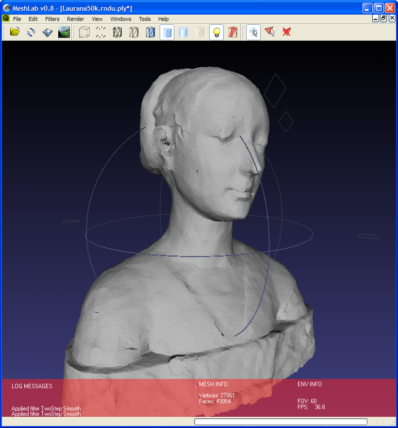
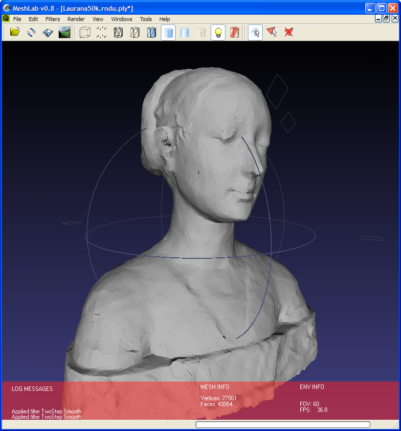

Kinect Bodyscanner
Research
3D Scanning
Preliminary research took place on the topic of our assignment, as well as the general components of 3D data capture. We discovered areas of interest such as point-cloud representation, as well as past applications of Kinect technology, which outlined some of the various other fields of application.
 

- Info on point clouds (http://en.wikipedia.org/wiki/Point_cloud)
- Info on visualising the point cloud (http://meshlab.sourceforge.net)
Sources for this preliminary research were mostly web pages, some of which were linked to by the UCL website here: http://www.ucl.ac.uk/3dim/bscanner. Via this link, we found information relating to a product implemented by a large high-street clothing store involving 3D Body Scanning technology. From initial meetings with our client, we understood this field to be one of great opportunity; our user interface designs were certainly influenced by the context set by this early research, and it continues to influence our long term goals for the project. When designing the interface, we were inspired by the in-store, mid-shop experience we had already seen, influencing our decisions about the target scanning duration, as well as output and platform, appropriately.
Kinect 2 SDK
Furthermore, it naturally became a priority to research the Kinect hardware as well as the accompanying SDK that we planned to utilise as much as possible. To this end, we explored Microsoft’s own online developer resources and videos, as well as some external sources for wider knowledge.
- MS Developer Resources
- 1st Article on Kinect Point Cloud Extraction
- 2nd Article on Point Cloud Extraction
The third link above gave rise to the interesting topic of 'registration' - that is the problem of directly mapping depth and colour pixel information, as the two camera sources are mis-aligned. Upon investigation, we learned that the Kinect SDK's CoordinateMapper class addresses this issue, though it remains a factor for consideration when discussing the Kinect’s accuracy at mapping this information.
When using the Kinect SDK during prototyping, we had to familiarise ourselves with some of the core functions we would need to call upon. Just some of these involve the following:
From these, and other sources of information like them, we discovered how to successfully utilise the SDK and - from detailed inspection of its sample projects - exactly when to call certain methods for best performance results. Useful tutorials and references were found here:
Platform
When deciding on what platform to run the prototype on, the natural answer was the Windows OS, as it fittingly ties with the Kinect product and SDK, making use of Visual Studio as a part of our toolchain. Another possibility that arose was to try and integrate our service with mobile platforms such as iOS and Android in order to provide increased convenience and accessibility to users. This then led us to consider our intended user experience, concluding that:
- With Windows being such a well-established platform within business and industry, the decision to base our application on this would prove useful for future deployment
- And to best serve the user and preserve their control of the sizing information we deliver, mobile platforms would make a useful addition post-scan